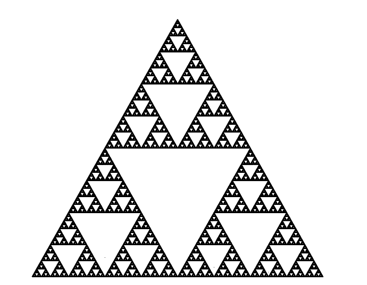
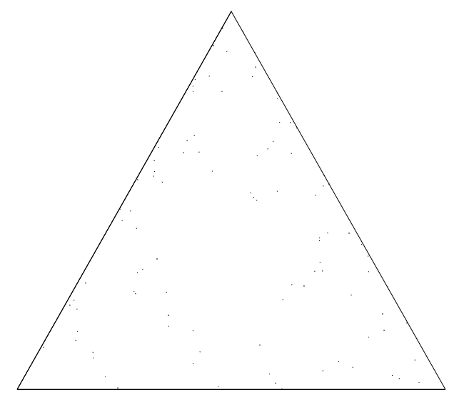
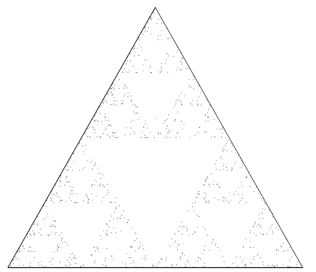
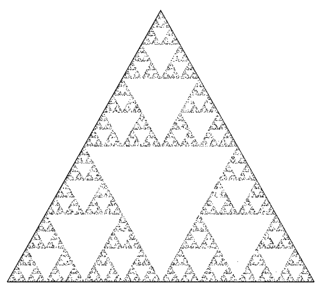
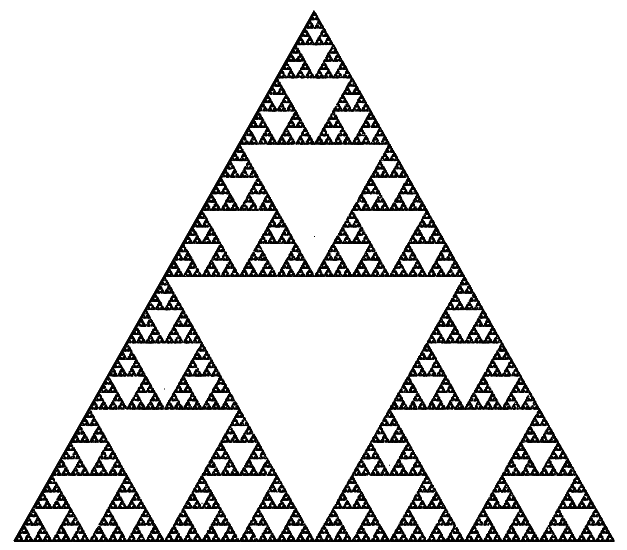
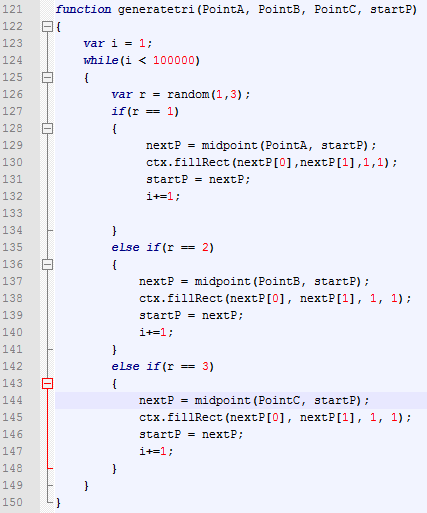
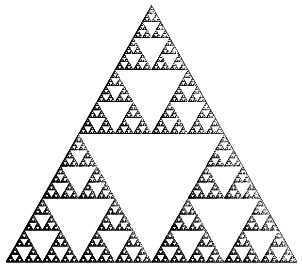
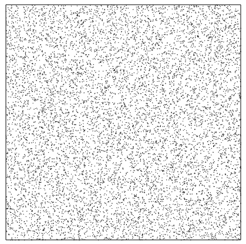
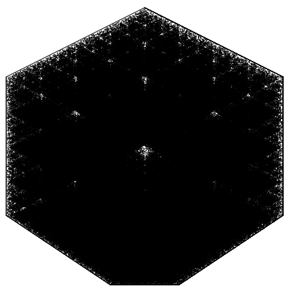

Chaos theory is the study of dynamic systems which are highly sensitive to initial conditions (i.e one small change to the initial conditions can cause a completely different
end result). These systems can be found both in human generated areas and naturally occurring ones. One specific area of naturally occurring chaos theory is weather, lightning in
particular. Since the circumstances under which lightning is created are still not known to us, it is currently impossible to predict where lightning will strike, and in what
frequency.

Above is an example of a fractal generated using chaos theory; it is known as the Sierpinski Triangle. It is generated using a simple method that, when first looked at, does not
appear to accomplish anything special. Here is a step-by-step to list to the generation of the Sierpinksi Triangle using chaos theory:
Start with a triangle ABC. It does not need to be equilateral or have any special rules, however triangles that are closer to equilateral look better in the end.
Start with a point anywhere within the bounds of the triangle.
Choose A, B, or C randomly, and take the midpoint of that vertex and the original point.
Repeat this process for the new point, and all new points subsequently formed.
Be amazed as this process actually generates you the Sierpinski Triangle.
Here is a picture of what the triangle would look like with 100 points generated using this method:

Here is a picture of what the triangle would look like with 1000 points generated using this method:

Here is a picture of what the triangle would look like with 10000 points generated using this method:

Here is a picture of what the triangle would look like with 100000 points generated using this method:

As you can see, the Sierpinski Triangle takes form as the points are randomly generated. (for the full HTML canvas webpage the images are based on, click
here)
Let's now go over the code used in its generation. We'll start with the function that actually generates the points. Here it is:

It is a relatively simple program to implement. Here are the steps for what it does:
Loops for variable "i" (the number of points that you want to create
Runs the function random for[1,3] (which basically chooses a random INTEGER using a minimum of 1 and a maximum of 3
Then, depending upon that random number, it takes the midpoint of current selected point and the randomly chosen vertex (the function "midpoint" being quite self
explanatory)
The program then draws a point at that midpoint, and switches the current point to that new points, and then iterates the process once again
There is additional code for other measures (such as setting up the original triangle, etc.) but that function is the essence of it. However, by the definition of chaos theory,
is it chaos theory? Let's try changing a couple of the initial "settings." How about if we make one of the vertexes twice as likely as the other two to be chosen? In that specific
case, this would happen:

Clearly this is a vastly different output. Let's try changing it up a little but more. What would happen if we used a square instead of a triangle? This:

Unfortunately this does not generate a cool pattern. What about if we tried it with a heptagon/septagon? This would happen:

As you can see, changing the initial settings varies the end result quite a lot. Therefore, the Sierpinski Triangle is indeed utilizing chaos theory. The two prior
examples can be found here and here.